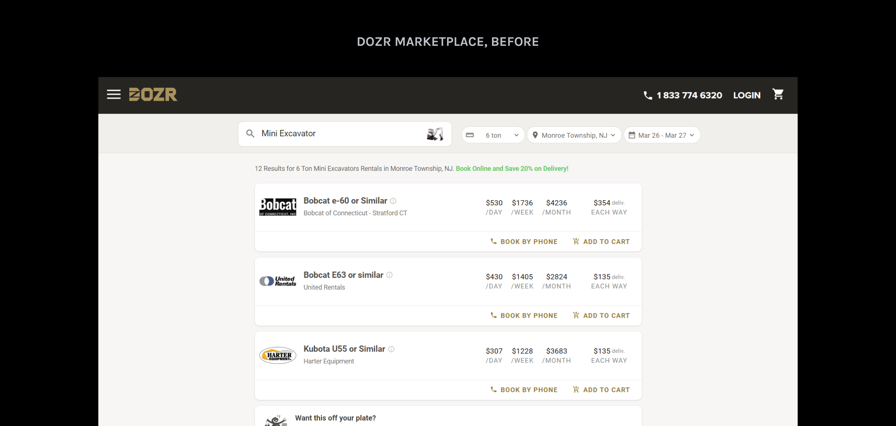
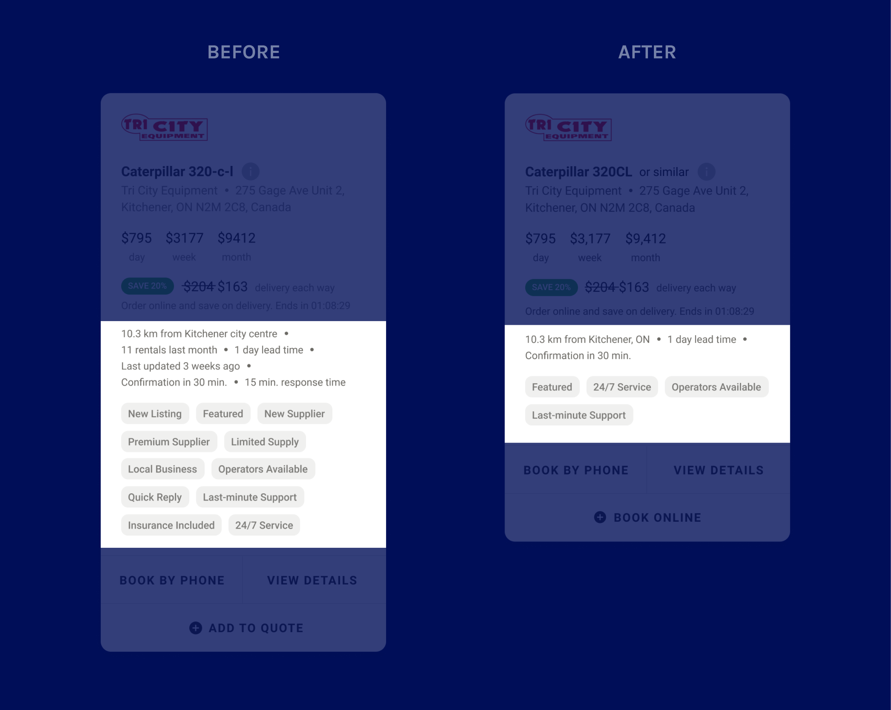
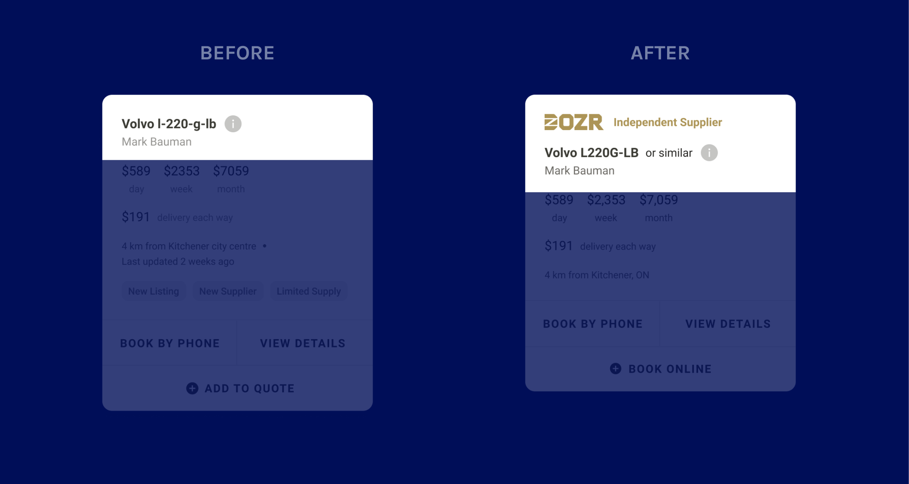
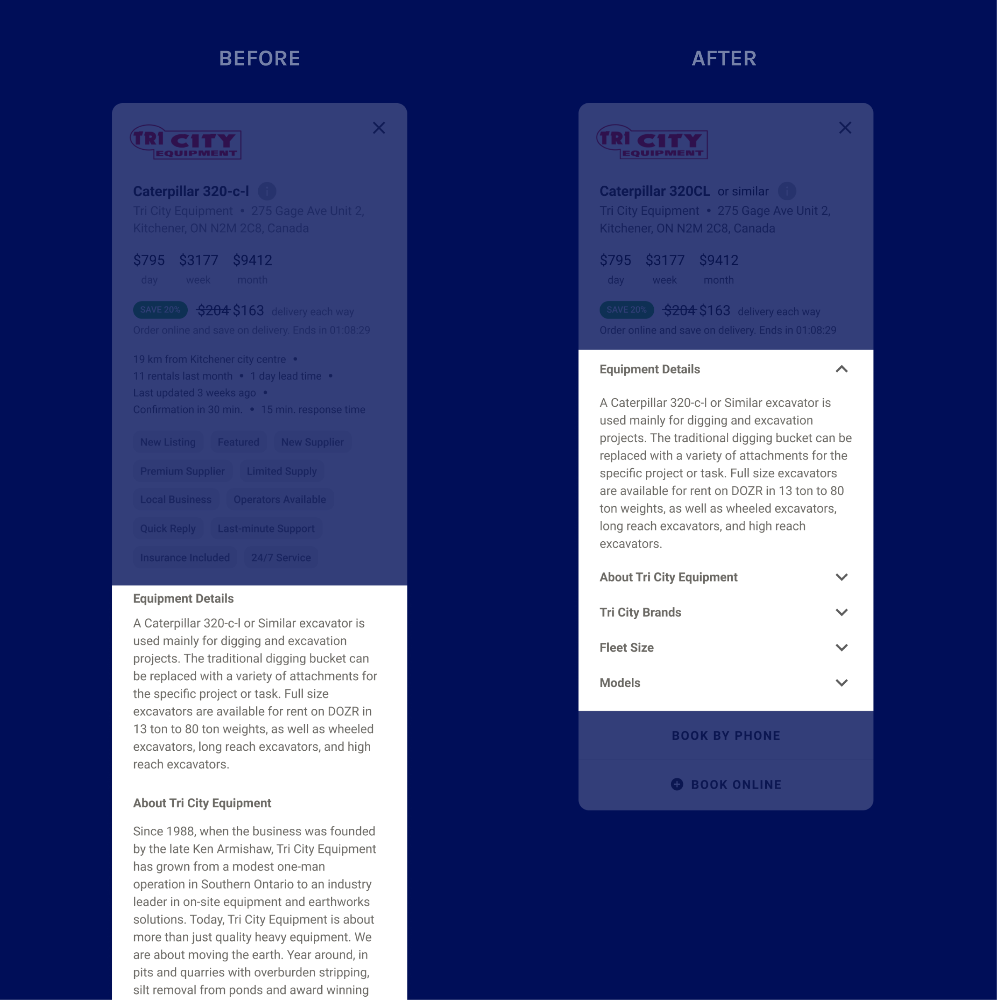

UX DESIGN INTERNSHIP
Helping contractors select the right equipment for their needs.
Team: Adam Euerby (Design lead), Jonathan Collie (UX designer, Categories page), me (UX design intern)
Role: Designer
Duration: Jan — Mar 2021 (4 weeks)
The DOZR Marketplace is one of DOZR’s products, where contractors can rent heavy equipment that suppliers list.
It’s hard to choose a piece of equipment from the listings.
There was a bounce rate of ~85% on the site, which might suggest unintuitive controls, or that people couldn't find what they were looking for.
Additionally, there was very little information about each piece of equipment online. Many sales calls had people asking basic questions about the equipment.
Make it easier for contractors to find equipment listing information to rent the right tools for their jobs.
THREE QUESTIONS TO ACHIEVE THIS GOAL: 1. What type of imagery should be displayed in each listing? 2. How can potential renters find equipment descriptions? 3. How can potential renters decide between different listings?
Grow digital sales Most sales come from phone calls — we wanted to increase the amount of online sales.
Get new suppliers as partners Use listings to benefit rental companies that work with DOZR, encouraging other companies to join DOZR as partners.
I made design decisions around three major areas of the design before usability testing: imagery, descriptions, and differentiators.
What type of imagery should be displayed in each listing?
⭐Selected option: Supplier logo⭐
Some contractors have supplier preferences, so displaying logos would make it easier to find those options. Most suppliers already have their logos uploaded to the system, so there is minimal extra work needed to obtain assets.
Logos from well-known suppliers add trust in place of equipment images.
Option 1: Equipment image
PROS Consistent with most ecommerce experiences — it adds trust because it shows what is for rent.
CONS Most suppliers don't upload equipment images, and placeholder images would look inconsistent. Randomizing equipment images as placeholders might confuse contractors. Manually adding images for each listing would be too time-consuming.
Option 2: No image
PROS Don't have to worry about inaccurate photos; always consistent.
CONS Lack of trust — potential renters might not be sure what they're actually getting.
How can potential renters find equipment descriptions?
⭐Selected option: Quick-view⭐
Easier navigation.
Option 1: Open in new page
PROS Consistent with most ecommerce experiences — feels familiar.
CONS There is not enough information per listing to warrant having a full page; might feel empty. Engineering constraints — infrastructure makes it harder to open listings in new pages. Additionally, 60% of users are on mobile, which may make it hard to navigate between different tabs.
Option 2: Accordion
PROS Easy and fast access to descriptions.
CONS The amount of information can take up the entire screen, making it hard to navigate.
How can potential renters decide between different listings?
⭐Selected option: Separating boolean and string-type⭐
Scalable.
Chunking information makes it easier for contractors to find what they are looking for.
Tags allow DOZR to highlight suppliers who are partners, in accordance with the second business goal.
Option 1: All pills
PROS Scalable, conserves space.
CONS Hard to accommodate for long strings of information. Lack of grouping makes it harder to parse through. Relevant construction-related icons are not common.
Three main issues found during usability testing sessions.
Most people did not understand what the tags meant and mentioned that they were not useful in their decision-making process individually, but the amount of tags sometimes influenced people to choose equipment that was slightly more expensive because they seemed to be higher quality. Additionally, people cared more about equipment-related tags than tags related to suppliers.
IMPROVEMENT Cut down on tags and focus them more on the equipment features rather than the supplier.
People were hesitant to rent from independent suppliers even if they had better prices, since the lack of logos made them seem less trustworthy than larger suppliers.
IMPROVEMENT Add a logo to independent suppliers’ listings to make them more consistent with other suppliers’.
Most people did not read through equipment descriptions even though they included details that they mentioned would be useful to them. This was because upon entering "Quick view", there was no new information above the fold.
IMPROVEMENT To increase discoverability and make it easier to find the specific information contractors are looking for, I hid the section details under accordions.
My internship ended before the new listings shipped, but the following would have been my next steps.
Increase in conversion rate. Because we’re implementing more design changes along with the listings, measuring the conversion rate by itself might not be accurate as to whether the new listing itself meets our goal. So, one method might be to check if conversion rate is higher with an increase in equipment information views.
There are some considerations for card listings that were not in scope for this project.
1. SAVING LISTINGS In the shipped design, there is no way to "save items for later," so it can be difficult to keep all prospective listings in mind. Adding a way to save listings could help contractors come back to them later if they are not ready to rent at that moment.
2. NARROW IN ON MOST IMPORTANT LISTING DETAILS The shipped design includes a variety of information in each listing. Knowing which details matter most to contractors would help narrow down on which pieces to focus on. Because of the design team's limited resources, part of this information could be gathered by analyzing which topics in the accordion are clicked on or tapped on the most in the listing. Topics with more reads could signify that they are important in contractors’ decision-making processes, and therefore could be made more apparent in the listings.